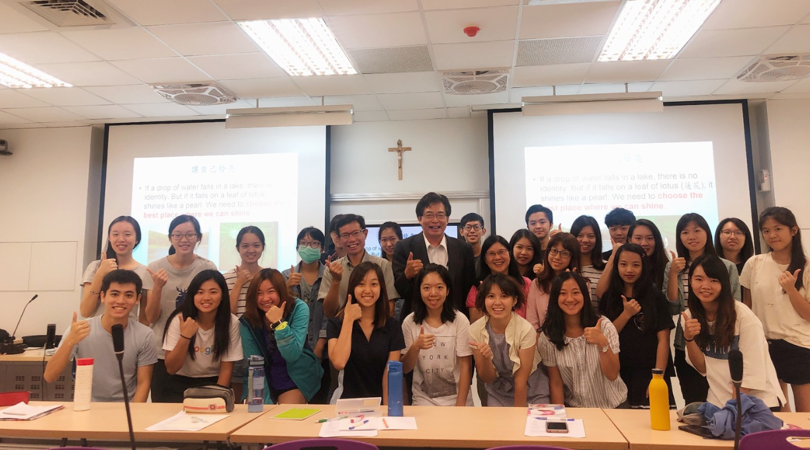

由泛太平洋集團總裁潘思源董事長支持成立的輔仁大學博物館學研究所思源基金講座，
2019年2月22日, 應美系一年級學生參加107年番茄在我們日常飲食中必不可少，而番茄中的「類胡蘿蔔素」則對人體健康有很大幫助。
 由中華民國輔仁大學校友總會以及台北市校友會主辦，於三月十一號下午，邀請輔大校友，同時也是中華職棒球員工會理事長的周思齊返校演講。
由中華民國輔仁大學校友總會以及台北市校友會主辦，於三月十一號下午，邀請輔大校友，同時也是中華職棒球員工會理事長的周思齊返校演講。
「輔仁大學聖母洞神聖空間暨藝術學院空間設施啟用祈福禮」3月6日上午11時於藝術學院旁聖母洞舉行由汪文麟神父主禮。
葉炳強院長自2002年進入輔仁大學醫學院醫學系兼任授課，至今已十七載，
落落大方，謙遜有禮，臉上總是掛著微笑，是對於「公共事務室主任」鄭靜宜的第一印象。
圖說：校牧林之鼎神父為宜聖學苑祈福灑下聖水。在2017年底動工的宜聖學苑，已於今年1月完成主體結構。輔仁大學於1月18日為宜聖學苑興建工程舉行「宜聖學苑主體結構完成祈福儀式」，邀請師長一同為宜聖宿舍工程祈福。
照片出處：耕莘文教基金會「燃燒自己.引燃別人」一書封面張宇恭神父於2月8日上午以94歲高壽於頤福園辭世，返回天父的家。
圖說：學生組由應美系張豪同學的作品〈光〉拿下特優。「2018輔仁大學校園攝影比賽」於去年（2018年）12月8日揭開得獎名單，此次以生活化的《我眼中的輔大日常》作為主題，
圖說：江漢聲校長與MGEM全體師生及畢業所有合影於招生晚宴。輔仁大學管理學院「三邊雙聯創業管理碩士班（MGEM）」，1月5日晚間於國璽樓11樓郎世寧廳舉辦第十屆歡迎晚宴，

圖說：優質領導菁英微學分學程規劃的優質領導利課程，特別邀請學術副校長袁正泰教授進行課堂演講。輔仁大學首創培養各行各業優質領導者的優質領導菁英微學分學程，學程精心規劃六門課程，其中的全球化議題課程特別安排了三場大師系列講座，
 輔仁大學因國際知名度和影響力在全球擁有許多姐妹校，為輔大學生提供多樣的交流平臺和合作機會。
輔仁大學因國際知名度和影響力在全球擁有許多姐妹校，為輔大學生提供多樣的交流平臺和合作機會。
圖說：輔仁大學與魯汶大學兩校交流，教授們合影留念。10月24日、25日兩天，德芳外語大樓FG204教室不時傳出雷鳴般的掌聲，原來，輔仁大學法國語文學系舉辦了「比利時天主教魯汶大學─輔仁大學跨文化國際學術研討會」，
圖說：107年度高教深耕計畫成果展於28日開幕，江漢聲校長親臨現場支持活動。輔仁大學高教深耕計畫辦公室於11月28日至30日三天的早上10點到下午4點，在宜真學苑1樓創意設計中心舉辦107年度高教深耕計畫成果分享會。
圖說：陳建仁副總統（第一排左三）參觀輔大仁愛學苑學生社團。輔仁大學歡迎副總統陳建仁蒞臨學校，副總統於11月14日下午來訪輔大，江漢聲校長熱情迎接副總統陳建仁的到來，擁有天主教信仰的陳建仁副總統來訪本校，在天主教信仰的「同根」下，建立良好的交流及互動。
Ad Taiwan台灣廣告節2018創意戰鬥營於17日晚間落幕，輔大廣告系可說是本屆得獎最大贏家。
圖說：聖愛服務隊服務大合照。近年來，香港學生因自殺而死亡的人數攀升，引發了自殺模仿效應，因此在香港聖公會福利協會生命教育中心的邀請，
輔仁大學音樂學系成立至今滿35周年，一路在演奏(唱)、創作、學術等領域培育出二千多名畢業生。